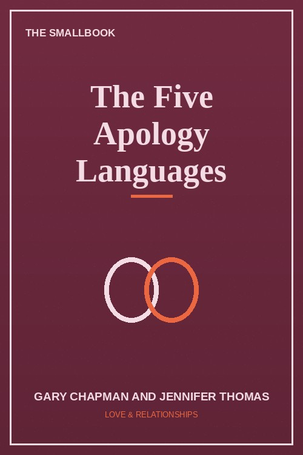

Library › Love & Relationships
The Five Apology Languages - Summary & Key Lessons

How to offer, and receive, an apology that actually lands.
📖 OPEN THE FULL INTERACTIVE BREAKDOWN →🌐 Read it in Hindi, Hinglish, Gujarati, Tamil & 22 more languages, with audio.
💡 The Big Idea
Building on his love languages work, Gary Chapman and Thomas studied what people actually need to hear to forgive, and found five apology languages: expressing regret, accepting responsibility, making restitution, genuinely repenting, and requesting forgiveness. Each person has a primary language; an apology missing it feels hollow even when sincere. The book teaches readers to identify their own language, learn their people's, and apologise in the dialect that can actually be received.
🧠 The 8 Key Lessons
Lesson 1: Expressing Regret: The Emotional Receipt
Apology Language One
Some people need to hear that you understand the pain you caused: I am sorry I hurt you, said with the specific hurt named and your face showing it. For them, explanations and fixes offered before regret feel like evasion. Gary Chapman and Thomas describe regret speakers who can forgive almost anything once the emotional receipt is given, and almost nothing without it. The language's discipline is specificity: sorry for the thing, its cost named, no ifs smuggled into the sentence.
📖 Example: A wife whose husband apologised for a forgotten anniversary with gifts and a dinner booking still felt unheard, because her language was regret: she needed to hear that he knew the forgetting had made her feel unchosen. When he finally said exactly that, the gifts became delightful instead of suspicious. Read the full example →
⚡ Do this: In your next apology, lead with the receipt: name the specific hurt and its cost to them, before any explanation. Watch what it unlocks.
Lesson 2: Accept Responsibility and Make Restitution
Apology Languages Two and Three
Responsibility speakers need the words without the weather report of excuses: I was wrong, not I was wrong but the traffic. Restitution speakers need the scales rebalanced: the damage repaired, the money repaid, the record corrected, because for them love is proved in the fixing. The book shows couples talking past each other for years, one offering flowers to a restitution speaker who wanted the fence rebuilt, each convinced the other was unforgiving by nature.
📖 Example: A business partner who missed a crucial filing apologised eloquently and often, while his partner's coldness deepened. In counselling the missing language emerged: restitution. He wanted the clients called, the penalties paid from the offender's share, the system changed. Once done, the eloquent apologies were retroactively accepted. Read the full example →
⚡ Do this: Ask your closest people their language directly this week: when I mess up, what do you most need to hear or see? Write the answers down.
Lesson 3: Repentance and Requesting Forgiveness
Apology Languages Four and Five
Repentance speakers need the plan: what will be different, demonstrably, from Tuesday. Promises without architecture insult them. And the fifth language, requesting forgiveness, completes an apology by returning power to the wronged: will you forgive me, asked without pressure, accepts that forgiveness is theirs to give on their schedule. Gary Chapman and Thomas close by noting that most of us apologise in our own language by default, fluent at home and foreign abroad, which is why sincerity so often fails to arrive.
📖 Example: A father kept apologising to his adult daughter for his drinking years with deep regret, her third language at best. Her language was repentance: she needed his sobriety's architecture, meetings, years, amends attempted. Five years into it she told him the apologies had finally started to work, backwards, like interest on a debt being honestly serviced. Read the full example →
⚡ Do this: Add the plan to your next meaningful apology: the change, its evidence, its start date. Then ask, will you forgive me, and accept the answer's timing.
Lesson 4: The Anatomy of a Failed Apology
Why Apologies Fail
Gary Chapman and Thomas dissect the standard failures: the apology with a but in the middle, the apology for feelings rather than actions, I am sorry you took it that way, the apology delivered to end discomfort rather than to repair damage, and the apology that demands instant forgiveness as its price. Each fails in a different language, and the book's diagnostic value is showing offenders why their sincere attempts keep bouncing: the receiver is not stubborn; the message never arrived in a language they speak.
📖 Example: A manager apologised to her team for a cancelled bonus with a heartfelt speech about her own disappointment, and watched morale fall further. The staff's language was restitution: they needed the plan for restoring the money. Her regret, however genuine, read as theatre because it cost her nothing they could bank. Read the full example →
⚡ Do this: Take your most recent failed apology and translate it: rewrite it in the receiver's language as the book defines them, then deliver the new version.
Lesson 5: Self Assessment: Learning Your Own Language
Discovering Your Language
The book includes a profile to identify the reader's primary apology language, and warns that couples usually marry across languages, guaranteeing translation errors until the map is learned. Gary Chapman and Thomas treat the discovery as marital infrastructure: knowing that your partner needs restitution while you offer regret reclassifies years of evidence. Neither is cold, neither is dramatic; they are two natives who believed they shared a tongue. The profile takes twenty minutes and the book suggests doing it on a date, which couples report turns an awkward exercise into a revelation.
📖 Example: A couple married eleven years discovered hers was requesting forgiveness, his was accepting responsibility, and audited their worst fight accordingly: each had apologised fluently and been heard as evasive. They describe the evening they learned the map as the cheapest therapy ever purchased, at the price of a paperback. Read the full example →
⚡ Do this: Take the profile with your partner this week and exchange results over a meal. Write each other's language where your apologies are drafted.
Lesson 6: Apologising to Children, and Teaching Them the Languages
Families and Forgiveness
The family chapter argues that parents who apologise to children, in the child's language, at the child's level, raise adults who can do the hardest thing in relationships: repair. Children learn the household's apology dialect by receiving it; the sibling forced to mutter sorry learns theatre, while the sibling guided to the other's language learns the actual skill. Gary Chapman and Thomas supply scripts by age, and a warning: never use a child's apology as the price of your affection's return.
📖 Example: Two brothers in the book, eight and eleven, are coached through a broken model kit: the elder's language turns out to be restitution, the rebuilding, while the younger needs regret, the big brother's face showing he knows it mattered. The parents watch the brothers run the repair themselves, the book's whole argument in one Saturday morning. Read the full example →
⚡ Do this: Coach one sibling or family repair this week using the languages: ask the wronged child what they need to hear or see, then help the other deliver it.
Lesson 7: When the Offence Is Too Big for Words Alone
Deep Wounds
The authors are careful with betrayals, abuse and addiction: here the languages still apply, but on a timescale of demonstrated change, and sometimes forgiveness means release without reconciliation. The chapter distinguishes forgiving, which frees the victim, from trusting, which must be re-earned as evidence, and gives the offender the long assignment: repentance with architecture, restitution where possible, and patience that does not invoice the wounded for healing on schedule. It is the book's most sober chapter and its most respected by counsellors.
📖 Example: A wife whose husband's gambling cost the family home describes her forgiveness arriving in year three of his programme, her trust still in probationary instalments at year five. Gary Chapman and Thomas present both timelines as healthy, a distinction readers in deep water write to thank them for, because it permits forgiveness without naivety. Read the full example →
⚡ Do this: If you owe a deep repair, write the long assignment: change, evidence, restitution, patience. Begin the first evidence this week.
Lesson 8: Apologies at Work and in Public Life
Beyond the Household
The closing application takes the languages into offices and public life, where institutional apologies fail in predictable dialects: regret without responsibility, responsibility without restitution, restitution offered to people whose language was repentance, a system fixed and announced. The book audits famous corporate and political apologies against the five languages and finds the pattern holds at scale: audiences forgive in their language or not at all, and the apology tour fails when it tours the wrong one.
📖 Example: A company's apology for a data breach offered customers eloquent regret and a helpline, and was savaged; the competitor in a similar breach led with restitution, paid monitoring, paid compensation, a new security chief with a published plan, and was forgiven by the same press. The languages predicted both receptions in advance. Read the full example →
⚡ Do this: Draft your next professional apology against all five languages and choose deliberately, per audience, which to lead with.
✅ 5-Step Action Plan
- Lead your next apology with the emotional receipt, specifically.
- Ask your people their apology language this week; record it.
- Rebuild one fence: a restitution owed, paid without commentary.
- Attach an architecture to one promise: change, evidence, start date.
- Request forgiveness once without pressure, and honour the timing.
- Notice your default language; practise your partner's for a month.
- Teach the five languages at one family meal; let everyone self identify.
⚠️ When This Doesn't Work
The language framework is a popular simplification of forgiveness research, useful as a map rather than a diagnosis. Deep betrayals need time and often counsel beyond any formula, as the authors themselves note.
💀 The Graveyard Proves It
💬 Best Quotes from The Five Apology Languages
- “A sincere apology is a powerful thing, but only if it is spoken in a language the other person understands.”
- “I'm sorry is the beginning of an apology, not the whole of it.”
- “Forgiveness is a choice, but a good apology makes it a possible one.”
Interactive version: mark lessons as read, listen in your language, share quote cards.